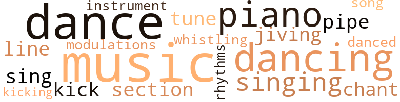
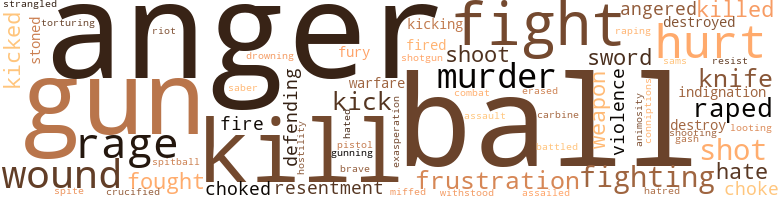

Cold Fire Burning (A), by Heard, Nathan (1974)
54 music-related terms matched in this text.
Most frequent terms in this topic: music (10); dance (6); dancing (5); singing (4); piano (4)
chant.n.01
Definition: a repetitive song in which as many syllables as necessary are assigned to a single tone
| word | sentence |
|---|---|
| chant | I did n't mind them so much , but soon other people joined them and some young kids started a chant : " What you havin f ' dinner ? " |
| chants | Then they laughed and the chants continued to slam at us , over and over again , until Terri was on the verge of tears . |
dance.n.01
Definition: an artistic form of nonverbal communication
| word | sentence |
|---|---|
| dance | I grabbed her hand and sure enough this chick had ripped off every dance in the black world , including a couple I was n't even hip to . |
| Dances | Dances come and go , but the grind never leaves . |
| dance | It 's a sexual dance , a kind of dry-fucking . |
| dance | And if a chick does it with a cat alone , in his pad , and feels his johnson getting hard against her thigh , and does n't stop him , she knows that there 's only one place for the dance to end - in bed . |
| dance | I mean , the chick just left her dance partner right in the middle of the floor and walked over to me like she was my woman , or something . |
| dances | I guess that 's one of the greatest values of the modern dances : never a moment 's embarrassment . |
dance.v.02
Definition: move in a pattern; usually to musical accompaniment; do or perform a dance
| word | sentence |
|---|---|
| dancing | There were dancing little highlights in it that made me wish it were a cool stream into which I could dive . |
| dancing | So many people were dancing when I got to Spoon 's that the floor shook and caused a slight twinge of pain in my leg . |
dance.v.03
Definition: skip, leap, or move up and down or sideways
| word | sentence |
|---|---|
| dance | I did n't even ask if she knew how to dance ; I figured if she was into the black community the way she seemed to be ( what with coming up to a black cat 's pad and all ) then dancing she had to know , was a prerequisite to her entry . |
| dancing | I did n't even ask if she knew how to dance ; I figured if she was into the black community the way she seemed to be ( what with coming up to a black cat 's pad and all ) then dancing she had to know , was a prerequisite to her entry . |
| danced | I wondered as we danced if she knew ; and hoped that she was n't a tease , or that this whole bit was n't some sort of patronizing for which I 'd be forced to knock her on her ass and kick her out of my place . |
| dancing | The music , especially when the radio blasted out with James Brown screams , immediately brought back to me the times when Terri and I would lie here listening and dancing to the sounds . |
| dance | " Wan na dance with me ? " she asked , attempting to pull me up . |
| dancing | They were dancing and posturing in a corner with agile , feline grace . |
jive.v.01
Definition: dance to jive music; dance the jive
| word | sentence |
|---|---|
| jiving | Like , if they needed me they had the right to expect me to be where I said I 'd be , instead of someplace jiving around . |
| jiving | Well , to make a long story short , they did let her go after they realized I was n't jiving and their threats failed to alter my stand . |
kick.v.04
Definition: kick a leg up
| word | sentence |
|---|---|
| kick | I wondered as we danced if she knew ; and hoped that she was n't a tease , or that this whole bit was n't some sort of patronizing for which I 'd be forced to knock her on her ass and kick her out of my place . |
| kick | We kick our woman 's ass when we 're bugged at the job . |
| kicking | I climbed from under a pack of people in time to see the handcuffed man kicking the cop in the face , in the body and everywhere else he found an opening . |
music.n.01
Definition: an artistic form of auditory communication incorporating instrumental or vocal tones in a structured and continuous manner
| word | sentence |
|---|---|
| music | What kinda music you like ? " |
| music | When the music began I just could n't keep still . |
| music | The whiskey was cheap , the music was loud and they were at home , I mean , contrary to what many white people think , blacks do n't feel comfortable with all blacks . |
| music | The music , especially when the radio blasted out with James Brown screams , immediately brought back to me the times when Terri and I would lie here listening and dancing to the sounds . |
| music | Then I left the store whistling a joyful snatch of music . |
| music | They done gave you movies , where a kiss is always connected with romantic music ; they done gave you books , where fuckin is a supernova in the heavenly constellation , and they done gave you television , where neither of these can happen without the use of both a mouthwash and a can of pussy perfume . |
| music | The music was soft and the barmaid , Be-bop Betty , handled the demanding customers with a gentle ease , though she really had her work cut out for her . |
| music | Spoon shouted at me above the music and the loud laughter . |
| music | The music temporarily halted and another girl came over to me . |
| music | The music made me feel better and I walked on a little lighter for having heard it . |
musical_instrument.n.01
Definition: any of various devices or contrivances that can be used to produce musical tones or sounds
| word | sentence |
|---|---|
| instrument | I wo n't allow you to make my love an instrument of your destruction . |
piano.n.01
Definition: a keyboard instrument that is played by depressing keys that cause hammers to strike tuned strings and produce sounds
| word | sentence |
|---|---|
| piano | She was playing an upright piano in a small alcove off to the left . |
| piano | When I was n't shooting I was singing along with the girl , Sheila , and even walked over to the piano a few times to suggest a tune . |
| piano | He could n't keep his mind on the game nor his eyes from following me each time I missed and headed for Sheila and the piano . |
| piano | While the balls were being racked up I moved off toward the piano again where Sheila was playing . |
pipe.n.04
Definition: a tubular wind instrument
| word | sentence |
|---|---|
| pipe | Yet I had to hold down a choke as a few drops went down the wrong pipe . |
| pipes | Cootie was on his feet pointing his finger in my face and waving his other hand at my sordid , poverty-row surroundings - the frayed , torn furniture , the broken plaster , the bare sweating pipes , all of it shimmering in the red glow of the bulb . |
rhythm.n.04
Definition: the arrangement of spoken words alternating stressed and unstressed elements
| word | sentence |
|---|---|
| rhythms | One of them had a radio and I heard the vibrant strains of Oye como va throwing rhythms to the stars . |
section.n.01
Definition: a self-contained part of a larger composition (written or musical)
| word | sentence |
|---|---|
| section | Vito made a few balls and his cheering section rode high on every push of the stick . |
| section | He turned toward his cheering section and shouted : " Would somebody tell that nigger to c ' mon and play the game . |
sing.v.02
Definition: produce tones with the voice
| word | sentence |
|---|---|
| singing | When I was n't shooting I was singing along with the girl , Sheila , and even walked over to the piano a few times to suggest a tune . |
| sing | I 'm gon sing it with you . " |
| sing | It would be like raping the Virgin Mary , or the all-loving Joan Baez , who 'd probably be apologetic for your inner anguish and sing " We Shall Overcome " all the while you were ripping her off . |
singing.n.01
Definition: the act of singing vocal music
| word | sentence |
|---|---|
| singing | The clicking of the balls as they struck each other and rebounded off the cushions framing the table was crisp , and even provided a certain pleasant accompaniment to the pretty voice of a pretty girl singing softly in the lounge area . |
| singing | He look around the room , threw a kiss at the girl playing and singing , then shouted : " Anybody else feel lucky ? " |
| singing | I was standing near her singing and watching him when , after taking a healthy swallow , he shouted : " Why n't you just play the game , fella , and stop talkin ? |
song.n.01
Definition: a short musical composition with words
| word | sentence |
|---|---|
| Song | " Look What They Done to My Song , Momma , " a voice wailed from the jukebox ; and fleetingly I wondered what had been done to all of us . |
transition.n.04
Definition: a musical passage moving from one key to another
| word | sentence |
|---|---|
| modulations | The way she talked - soft tones , gentle modulations , sweet easy figures of speech . |
tune.n.01
Definition: a succession of notes forming a distinctive sequence
| word | sentence |
|---|---|
| line | I had heard that a woman needed an occasional sock in order to keep her in line , off-guard and interested . |
| lines | And as my thoughts grew along these lines her look took on a less aggressive nature to me . |
| tune | The jukebox was blasting out a loud Charles Earland tune and the fingerpopping , hip-twitching good times were rolling along as if nothing had happened at all . |
| tune | When I was n't shooting I was singing along with the girl , Sheila , and even walked over to the piano a few times to suggest a tune . |
whistle.v.01
Definition: make whistling sounds
| word | sentence |
|---|---|
| whistling | Then I left the store whistling a joyful snatch of music . |
240 violence-related terms matched in this text.
Most frequent terms in this topic: anger (26); gun (17); kill (16); fight (15); balls (12)
aggravation.n.01
Definition: an exasperated feeling of annoyance
| word | sentence |
|---|---|
| exasperation | I was trying hard to hold back my exasperation at Cootie . |
anger.n.01
Definition: a strong emotion; a feeling that is oriented toward some real or supposed grievance
| word | sentence |
|---|---|
| anger | I was tempted to smack him , but he sensed my anger and I knew he was ready to use that bottle on me if I attacked him . |
| anger | But - " I did n't know what was happening to me , but suddenly my anger rose until I had to fight it back to a level I could control . |
| anger | My anger , of course , would be directed at both of us later on , but I also knew that I would n't say a damned thing . |
| anger | The redness on her face that had been put there by sex took on a deeper hue , bespeaking very real anger . |
| anger | I raised my voice to imply a threat and felt immediately foolish , which increased my frustrated anger . |
| anger | My anger raced with my sexual desire to the explosive finish , and the desire only won out a second before the anger was about to erupt . |
| anger | My anger raced with my sexual desire to the explosive finish , and the desire only won out a second before the anger was about to erupt . |
| anger | I know your rage and anger . |
| anger | More laughs and even more anger from Vito . |
| anger | I took the few steps back to the table with an air of indifference - and , indeed , I felt no anger . |
| anger | I looked at Vito and let my anger dissipate my momentary awareness . |
| anger | We stab , cut and shoot each other in our fury , and then apologize to the white cop who arrests us , all the time revealing how shallow and empty our anger is . |
| anger | I saw the man who had grabbed me and my fear vanished for a fraction of a second to be replaced by anger . |
| anger | I pulled the trigger but the gun was empty , empty as my momentary anger . |
| anger | Her voice was n't hard ; it had no anger in it . |
| anger | As she fell back on the bed anger flashed and died in her eyes and a stoiclike calm spread over the rest of her features . |
| anger | Mojo must have seen my anger rising . |
| anger | He seemed to become angry himself as he talked , and his anger did n't focus on myself or Mojo . |
| anger | My voice betrayed my anger and I fought hard to harness them both . |
| anger | Ilis mouth was moving below his red , angry eyes , but the anger I felt fulminating inside me deafened me so that all I could hear was the harshness of my own breathing . |
| anger | I asked , my anger rising . |
| anger | I saw them tense up , giving me evil eyes , making my spine run tingly with mixed fear and anger . |
| anger | When I turned I saw the thin , birdlike face and hard eyes of the cop sitting in a patrol car my loneliness vanished into anger because from the tone of his voice he was out to play God tonight . |
| anger | Then my anger grew larger than my fear . |
| anger | I had no fear , but I was slowly filling with anger at the thought that he could order me around in a voice that was worse than as if he had hit me . |
| anger | Birdface was trembling in his anger . |
anger.v.02
Definition: become angry
| word | sentence |
|---|---|
| angered | My hand trembled and I spilled a little of the beer , and was further angered by the curious , patronizing smile on her face . |
| angered | This was another daily occurrence , as the white folks began their escape to the suburbs in locked cars , stealing glances at the black natives whom they passed , and angered at the traffic jams they themselves caused in their haste to flee the city . |
animosity.n.01
Definition: a feeling of ill will arousing active hostility
| word | sentence |
|---|---|
| animosity | His manner was outwardly calm and his voice held no tangible animosity as he said , " Ca n't find what you lookin for in a black woman , huh ? " |
attack.v.01
Definition: launch an attack or assault on; begin hostilities or start warfare with
| word | sentence |
|---|---|
| assailed | The scent assailed my nostrils and stoked the boiling in my gut . |
battle.v.01
Definition: battle or contend against in or as if in a battle
| word | sentence |
|---|---|
| battled | I battled every embarrassment and every frustration I 'd ever suffered . |
carbine.n.01
Definition: light automatic rifle
| word | sentence |
|---|---|
| carbine | It got so quiet that I was sure I 'd turn to look into the muzzle of a national guardsman 's carbine that would blow me a brand-new asshole . |
crucify.v.01
Definition: kill by nailing onto a cross
| word | sentence |
|---|---|
| crucified | Like Jesus , life was being crucified - and for the same reasons . |
cut.n.05
Definition: a wound made by cutting
| word | sentence |
|---|---|
| gash | With the exception of a deep gash on my left leg , right arm , and the hellish pain in my shoulder , I was okay . |
defy.v.01
Definition: resist or confront with resistance
| word | sentence |
|---|---|
| withstood | So I debated with myself a while before telling them about Terri , not because I could n't have gotten them to accept the fact of my affiliation - and act accordingly - but because they would n't accept the idea of it ; and the trust built between them and me could n't have withstood the force of a spitball , given the right set of circumstances and the wrong point of view . |
destroy.v.04
Definition: put (an animal) to death
| word | sentence |
|---|---|
| destroyed | Now that response really destroyed my hopes . |
| destroyed | Maybe they oughta be destroyed so we can build better ones . |
| destroy | It 'll shatter and destroy you most , and I 'll be unable to help , and that 'll destroy me also . |
| destroy | They 'll destroy us or make us destroy ourselves . " |
drown.v.04
Definition: kill by submerging in water
| word | sentence |
|---|---|
| drowning | I remember my own screams drowning out those of the crowd , and my body going out of my control , possessed by some unknowable survival spirit which only the very worst disaster could overcome , and the very worst it could be was my death . |
erase.v.01
Definition: remove from memory or existence
| word | sentence |
|---|---|
| erased | The closer I got to the projects the more her image faded until another blast of that siren erased it completely . |
fight.n.02
Definition: the act of fighting; any contest or struggle
| word | sentence |
|---|---|
| fighting | Suddenly the thumping stopped ; my mind became a temporary void , but the heat within me burned higher and higher until I found myself lying on top of her fighting to keep her from pushing me off . |
| combat | And much of it , I thought longingly , could be used to choke him in close combat . |
fight.n.05
Definition: a boxing or wrestling match
| word | sentence |
|---|---|
| fights | There was nothing I could connect with , no fights , roaches , junkies , no cooking smells . |
| fight | Yet I could n't allow her to leave in innocence . . . not without a fight . |
| fight | I mean , it was her fight , too . |
| fight | I do n't know how I got to fighting with her when all I intended to do was fight for her . |
| fight | I looked around the bar and saw that everyone in the place was waiting for me to take the challenge so they could see a fight , or take low so they could have a good laugh . |
| fight | Y' know that fight last night really shot yo stock up in this community . |
| fight | I thought our fight was spoze t ' be against the rich and the powerful who trample on the poor and needy . |
| fight | As a matter of fact one of those black plays was the cause of our first real fight . |
| fight | " The nigga throwed the fight , man ! " one gestured and sloshed his drink over his hand . |
fight.v.02
Definition: fight against or resist strongly
| word | sentence |
|---|---|
| fight | But - " I did n't know what was happening to me , but suddenly my anger rose until I had to fight it back to a level I could control . |
| fighting | I do n't know how I got to fighting with her when all I intended to do was fight for her . |
| fighting | It was like fighting an army of ghosts , a losing battle with myself , like really trying to punch out my own shadow . |
| defending | They picked at me something awful at first , but I was n't slack in defending myself against their barbs and boasts . |
| fight | " I ai n't here to fight you . " |
| fight | " I was born to fight crackas and neegroes like you , " he snapped back . |
| fight | " I wo n't fight you unless I have to , Sam , " and I had to fight back a strong desire to add : " I ai n't afraid either . " |
| fight | " I wo n't fight you unless I have to , Sam , " and I had to fight back a strong desire to add : " I ai n't afraid either . " |
| fighting | At times I saw four Sams ; my desperation grew and I knew beyond a doubt that I was fighting for my very life , as fearfully real as if I were wading through rice paddies in Nam with a million Vietnamese charging in righteous indignation at me . |
| fought | My voice betrayed my anger and I fought hard to harness them both . |
| fighting | We were supposed to be soldiers in the same army fighting the same enemy . |
| fought | She buried her head in my lap while I fought back the urge to take her in my arms and comfort her . |
| fought | I fought back my nausea and forced myself to look at the barren hole in the front of the cop 's blue pants . |
| fight | I did n't know whether I should try to fight or try to run away . |
| fight | Since I 'd decided not to fight back , I balled myself into a knot and let them have their way . |
| defending | How was it I had to wind up defending white people to a white person ? |
fit.n.01
Definition: a display of bad temper
| word | sentence |
|---|---|
| conniptions | Eddie-cop - recovered from his initial shock , but about to have conniptions this time - came running toward the crowd firing his gun into the air . |
frustration.n.03
Definition: a feeling of annoyance at being hindered or criticized
| word | sentence |
|---|---|
| frustration | And she certainly could n't have known that I was merely speaking out of my deep sense of frustration . |
| frustration | I battled every embarrassment and every frustration I 'd ever suffered . |
| frustration | I cried in rage and frustration . |
| frustration | Mojo just sat with a pot-induced grin on his face ; distant , self-satisfied , listening , but through a giant mesh of contentment that turned all of his bricks of frustration - if he had any - to pabulum . |
fury.n.01
Definition: a feeling of intense anger
| word | sentence |
|---|---|
| rage | An incredibly hot rush of rage seized me . |
| rage | Honky whore ! " because I could n't get it all in and that fueled my rage . |
| rage | I know your rage and anger . |
| fury | We stab , cut and shoot each other in our fury , and then apologize to the white cop who arrests us , all the time revealing how shallow and empty our anger is . |
| rage | Why should n't we re-route the rage ? |
| rage | I cried in rage and frustration . |
| rage | The innocent look spreading over her features only increased the calm rage that simmered within me . |
| rage | And even then , with my rage tearing me apart and leaping up to engulf me wholly , I wondered why I was doing what I was doing , and why I could think of nothing but curse words to say to him . |
| fury | By some stroke of luck - or Eddie-cop 's blind fury - we made the corner . |
| rage | I 've forgotten the name of the play - something like Black Domain , written by one of those separa-tionist playwrights who scream rage and pain and curse words at the audience with a subtle underlying plea to white people for a piece of the capitalist action . |
gag.v.06
Definition: cause to retch or choke
| word | sentence |
|---|---|
| choke | Yet I had to hold down a choke as a few drops went down the wrong pipe . |
| choked | The wine was on the table ; I grabbed it and turned it up , taking large , greedy chugs until I almost choked myself . |
| choked | He opened it , took a long drink and damn near choked himself into a faint . |
| choke | And much of it , I thought longingly , could be used to choke him in close combat . |
gun.n.01
Definition: a weapon that discharges a missile at high velocity (especially from a metal tube or barrel)
| word | sentence |
|---|---|
| guns | How many guns y' all got ? " |
| guns | " Git a coupla more guns by tomorrow so that we 'll all have one , cause tomorrow night we gon do some ridin . |
| gun | I 'd known dozens of working stiffs who 'd done the same , straight dudes who one day packed it in and picked up the gun . |
| gun | One day I was a straight cat , waiting for old age and social security , the next day I was picking up the gun . |
| gun | " We could only git one gun besides the one we already got , " Mojo regretted . |
| guns | We moved in waving our guns and herding the people against the counter . |
| gun | The owner had gotten hold of a gun and was kneeling down behind the counter firing wildly up at the ceiling . |
| gun | All I could see was his hand holding the gun as he sent shot after shot into the plaster overhead . |
| gun | I do n't recall that I stopped running , but I remember the utter shock on his face as I pointed the gun directly at him . |
| gun | I pulled the trigger but the gun was empty , empty as my momentary anger . |
| gun | His gun was in his hand and his eyes literally glittered with the fear and excitement within him . |
| gun | He stood confused , above the weeping man , not even realizing that he was waving his gun about like an idiot . |
| gun | His partner finally took Eddie-cop 's gun hand and guided the weapon to its holster while Eddie-cop verged on hysteria . |
| gun | He backed away with his gun hand hanging loosely at his side . |
| gun | Eddie-cop - recovered from his initial shock , but about to have conniptions this time - came running toward the crowd firing his gun into the air . |
| gun | I saw him point his gun at the handcuffed man , who was still kicking the downed cop . |
| gun | I finally saw him struggling out from beneath the heavy-set woman and looking around for his gun , which I could n't see . |
| gun | I only looked back once , and I saw Eddie-cop picking up his fallen comrade 's gun . |
| gun | His gun hand twitched as it moved to the gun holster . |
| gun | His gun hand twitched as it moved to the gun holster . |
gun.v.01
Definition: shoot with a gun
| word | sentence |
|---|---|
| gunning | Were they gunning for me ? |
hate.n.01
Definition: the emotion of intense dislike; a feeling of dislike so strong that it demands action
| word | sentence |
|---|---|
| hatred | Tears were streaming from his red eyes as the full blast of all my hatred for him and whites and blacks both who had humiliated me in one way or another spun my senses so that I could hardly focus my eyes upon him . |
| hate | The cop stopped in front of me and it seemed like I could smell the hate , fear and body odor emanating from his sweaty , blue shirt . |
hate.v.01
Definition: dislike intensely; feel antipathy or aversion towards
| word | sentence |
|---|---|
| hated | Able as any white policeman to be supremely important , supremely unapproachable in the ghetto , to make folks cringe and get out of your way , to kill with a look , to know that though you are hated , you are feared even more . |
| hate | " Can you accept me as the leader of a bunch of guys who might hate you enough to kill you ? |
| hate | " I must mean it , or else we 'll grow to hate each other . |
hostility.n.01
Definition: a hostile (very unfriendly) disposition
| word | sentence |
|---|---|
| hostility | I had n't really thought consciously to antagonize him , really , but I looked at that dead woman and her grieving man and I just could n't contain the hostility inside me . |
hurt.v.04
Definition: cause damage or affect negatively
| word | sentence |
|---|---|
| hurt | " He been hurt pretty bad and been askin for you . " |
indignation.n.01
Definition: a feeling of righteous anger
| word | sentence |
|---|---|
| indignation | At times I saw four Sams ; my desperation grew and I knew beyond a doubt that I was fighting for my very life , as fearfully real as if I were wading through rice paddies in Nam with a million Vietnamese charging in righteous indignation at me . |
| indignation | The girl , a short , light brown broad named Agnes , flushed dark with indignation . |
injury.n.01
Definition: any physical damage to the body caused by violence or accident or fracture etc.
| word | sentence |
|---|---|
| hurt | He tried to clutch all the places on his body that hurt at once and failed miserably . |
| hurt | Terri saw my confusion and despair for she rushed quickly to my arms , examining me for signs of physical hurt even after I 'd told her there had been no contact between the gang and me . |
kick.v.04
Definition: kick a leg up
| word | sentence |
|---|---|
| kick | I wondered as we danced if she knew ; and hoped that she was n't a tease , or that this whole bit was n't some sort of patronizing for which I 'd be forced to knock her on her ass and kick her out of my place . |
| kick | We kick our woman 's ass when we 're bugged at the job . |
| kicking | I climbed from under a pack of people in time to see the handcuffed man kicking the cop in the face , in the body and everywhere else he found an opening . |
kick_back.v.02
Definition: spring back, as from a forceful thrust
| word | sentence |
|---|---|
| kicked | And I will always be able to forgive them for their weaknesses , for allowing themselves to be kicked in the teeth or destroyed by a power greater than themselves . |
| kicking | I saw him point his gun at the handcuffed man , who was still kicking the downed cop . |
| kicked | They 'd once belonged to the Black Panther Party , then to the Committee for a Unified New Ark , but had been kicked out of both organizations and so formed their own little neighborhood revolutionary cadre made up of themselves and specializing in " touch-off " and " stick-up " tactics , i.e. , liberating legal tender . |
| kick | Right now , however , with the loss of her gnawing at my insides , I was tempted to go there and present myself in all my blackness , to kick down the door if need be . |
| kicks | Perhaps , I thought , if I let them get their sadistic kicks it would n't be so bad . |
| kicked | " They shoulda kicked his ass outa the Muslims . " |
kill.v.10
Definition: cause the death of, without intention
| word | sentence |
|---|---|
| kill | Under that bulb in my two-room flat she did n't seem quite so white , nor myself quite so black - not with the wars going on around us , inside us , where murder was a very real act of orgasm , and people wanted to kill for their own precious relief . |
| killed | I could have killed her at that moment had it not been for my overwhelming need of her ; had not my lust been so great or my will so weak . |
| kill | Dig it , she 's already condescended and she 'll have to kill , if you demand an encore . |
| kill | A woman 's voice cried hysterically , " Do n't let him kill him ! " over and over again . |
| kill | " Do n't let him kill him ! " |
| kill | But I did want to kill . |
| kill | I wanted to kill anything and everything . |
| kill | Able as any white policeman to be supremely important , supremely unapproachable in the ghetto , to make folks cringe and get out of your way , to kill with a look , to know that though you are hated , you are feared even more . |
| kill | Our purpose ai n't to kill them , it 's to change them without becomin like them , or even a small part of them , because then we would be them . |
| kills | " What you sayin kills all hope - for everybody ! |
| kill | " Can you accept me as the leader of a bunch of guys who might hate you enough to kill you ? |
| killed | " Them muthafuckas done killed JoAnn ! " a heavy-set woman replied . |
| kill | " Why y' all kill my woman ? |
| kill | Why y' all hada kill her ? " |
| kill | He had remarkable balance , no doubt inspired by his instinct to kill that which had killed a part of him . |
| killed | He had remarkable balance , no doubt inspired by his instinct to kill that which had killed a part of him . |
| kill | " I 'm gon na kill ya ! |
| kill | If it 's the last thing I do , I 'm gon na kill ya ! |
| kill | Other arguments among the customers kept intruding upon my thoughts , and the white fag 's face kept getting mixed up with Terri 's until I felt that if I did n't get out of Spoon 's fast I would either kill him or fuck him , or maybe both . |
| kill | Actually I was only trying to kill time until Terri got off work . |
knife.n.02
Definition: a weapon with a handle and blade with a sharp point
| word | sentence |
|---|---|
| knife | " She had a knife , did n't she ? " the cop yelled at him . |
| knife | - spitting out blood , his face a crisscrossed map of scars and knife wounds . |
| knife | My knife whipped and took a plug from the back of his hand . |
| knife | I reached into my pocket and felt the cool , hard reassurance of my knife . |
looting.n.01
Definition: plundering during riots or in wartime
| word | sentence |
|---|---|
| looting | I think we were all a little angry at him for the same reason : had he been alert instead of just looting , perhaps that woman would n't have surprised us . |
malice.n.01
Definition: feeling a need to see others suffer
| word | sentence |
|---|---|
| spite | Toleration rather than friendship existed there , with the Puerto Ricans quickly learning that in spite of their lighter skin and straighter hair , they too were niggers . |
miff.v.01
Definition: cause to be annoyed
| word | sentence |
|---|---|
| miffed | I thought nothing of it for a while , but as I tried harder and it still refused to budge , I became slightly miffed , which of course broke my concentration . |
murder.n.01
Definition: unlawful premeditated killing of a human being by a human being
| word | sentence |
|---|---|
| murder | Under that bulb in my two-room flat she did n't seem quite so white , nor myself quite so black - not with the wars going on around us , inside us , where murder was a very real act of orgasm , and people wanted to kill for their own precious relief . |
| murder | Despite the hot pursuit of moist pussy and big dick , some were aware that near murder had taken place . |
| murder | When tears would no longer come I sat on my sofa and thought of pure , clean murder . |
| Murder | Murder without reason , murder because all hope was , in the end , hopeless . |
| murder | Murder without reason , murder because all hope was , in the end , hopeless . |
musket_ball.n.01
Definition: a solid projectile that is shot by a musket
| word | sentence |
|---|---|
| ball | No matter how much I grunted and pushed and tried to force that muthafuckin shit out of me there was nothing , nothing but a hollow , gaseous ball left in my hollow stomach . |
| balls | The clicking of the balls as they struck each other and rebounded off the cushions framing the table was crisp , and even provided a certain pleasant accompaniment to the pretty voice of a pretty girl singing softly in the lounge area . |
| ball | They played Chicago , a hard-slamming rotation game , which allowed the shooter virtually anything he could sink , so long as he hit his allotted ball first . |
| balls | The best strategy in Chicago was , therefore , to shoot with force and pick up extra balls on the hard-banking rebounds . |
| ball | The room shook with the angry crack of ball on ball , the groans and shouts of the players , the tumultuous din of pitched battle . |
| ball | The room shook with the angry crack of ball on ball , the groans and shouts of the players , the tumultuous din of pitched battle . |
| balls | Most eyes absorbed the action on the gambling table and reflected interest as the balls rolled , spun and slammed into ' the six pockets of the table . |
| balls | The eyes of the bettors pleaded as the mouths beneath them muttered cries of joy or raucous curses depending on whose balls sank or missed . |
| ball | He got up to sink the last ball into the side pocket and win the game . |
| balls | When Vito broke the balls and ran only one of them , missing his second easy shot , my confidence soared . |
| balls | I ran off six of my balls before I missed . |
| balls | Vito ran a couple of balls then missed again , leaving me an easy out . |
| ball | I knocked in the eight ball and won . |
| ball | I came over and sunk the twelve ball , then looked in the direction of the voice and gave a big grin . |
| ball | I only had one more ball to go , but I was so full of myself that I missed it . |
| balls | Vito made a few balls and his cheering section rode high on every push of the stick . |
| ball | On the next rack I made the eight ball on the break , winning again . |
| balls | While the balls were being racked up I moved off toward the piano again where Sheila was playing . |
| balls | When my johnson first touched her pussy she gave a small squeal and then quickly shoved it in so that my balls banged against her buttocks . |
| ball | I waited till she had come and come and come , then I eased out my piece of flab and lay beside her pretending that I 'd had a natural ball . |
| ball | Ahmad seemed actually bored with us , and his attitude of benign superiority was a growing ball in my stomach . |
| balls | She tenderly toyed with my hanging balls , which almost ached to rid themselves of sperm . |
| balls | I went to the rear table , racked the balls and began shooting eight-ball by myself , hoping to perfect a five-rail bank but hardly able to break . |
open_fire.v.01
Definition: start firing a weapon
| word | sentence |
|---|---|
| fire | Giving them a reason to fire me , if they want . |
| fired | Then I heard shots being fired . |
| fired | I fired at the bottle behind him . |
| fire | Eddie-cop was about to fire again when the heavy-set lady that I 'd noticed before bumped him so hard that he dropped his weapon . |
pain.v.02
Definition: cause emotional anguish or make miserable
| word | sentence |
|---|---|
| hurt | The kissing did n't last long , for she snatched her mouth away and placed it on my neck where she began to suck the skin - so much so that it hurt me . |
| hurt | She banged down the phone so hard that it hurt my ears . |
| hurt | Yeah , my blow had hurt her pride , but it had n't dimmed her desire ; and then it occurred to me that I did n't know anybody who had n't beaten their woman 's behind at least once . |
| hurt | Probably the farthest thing from his mind was that this black man would attempt to hurt him on his own turf . |
| hurt | I was disappointed that she did n't ask how bad I was hurt or anything . |
| hurt | The beating did n't last long and really did n't hurt that much , but I was crying from the humiliation . |
pistol.n.01
Definition: a firearm that is held and fired with one hand
| word | sentence |
|---|---|
| pistol | Even though I banged him over the head with my pistol he would n't let go of me . |
rape.n.03
Definition: the crime of forcing a woman to submit to sexual intercourse against her will
| word | sentence |
|---|---|
| assault | She , oh yes , worshiped the infinite power and reveled in the latent violence it represented , for here was a dick that could assault her . |
rape.v.01
Definition: force (someone) to have sex against their will
| word | sentence |
|---|---|
| raped | And I sensed with real assurance that the best thing that could have happened to her would have been to be raped by Ahmad and his gang . |
| raped | Like , the idea of seeing her get raped by Mojo , Ahmad , Cootie and Sam took on gratifying appeal for me . |
| raped | " By gittin raped ? " |
| raping | It would be like raping the Virgin Mary , or the all-loving Joan Baez , who 'd probably be apologetic for your inner anguish and sing " We Shall Overcome " all the while you were ripping her off . |
| raped | I was beginning to wonder if she was n't really looking forward to being raped . |
resentment.n.01
Definition: a feeling of deep and bitter anger and ill-will
| word | sentence |
|---|---|
| resentment | I had to hold back a rising resentment inside me because it was in such direct conflict to my need of her . |
| resentment | There are so many more Mojos and Cooties and Ahmads now and their resentment hits me harder each day . " |
resist.v.04
Definition: withstand the force of something
| word | sentence |
|---|---|
| resist | " You gon na resist us ? " |
riot.n.01
Definition: a public act of violence by an unruly mob
| word | sentence |
|---|---|
| riot | " You wan na get locked up for incitin a riot ? " he warned . |
saber.n.01
Definition: a fencing sword with a v-shaped blade and a slightly curved handle
| word | sentence |
|---|---|
| saber | He had everything but a saber and campaign ribbons . |
shoot.v.02
Definition: kill by firing a missile
| word | sentence |
|---|---|
| shoot | The best strategy in Chicago was , therefore , to shoot with force and pick up extra balls on the hard-banking rebounds . |
| shoot | Then , walking to the table , I said : " You shoot a pretty powerful stick , Vito baby . |
| shot | I felt very powerful despite the fact that I had n't shot my seed into her and taken full possession . |
| shoot | Why n't you shoot me , too ? " |
| shot | You shot my woman f ' nuthin ! |
| shot | He might have shot into the crowd and hit any number of people , but , somehow , I got the distinct impression that Eddie-cop could hit what he wanted with little trouble . |
| shot | " You shot ? " |
| shot | And I think he just might have shot me if Pete had n't cooled him by pulling him away . |
shooting.n.02
Definition: killing someone by gunfire
| word | sentence |
|---|---|
| shooting | I thought that was good since if the cops happened upon us they might be a little less inclined to start shooting . |
shotgun.n.01
Definition: firearm that is a double-barreled smoothbore shoulder weapon for firing shot at short ranges
| word | sentence |
|---|---|
| shotgun | I rode shotgun while Mojo and Cootie sat in back . |
spitball.n.01
Definition: a projectile made by chewing a piece of paper and shaping it into a sphere
| word | sentence |
|---|---|
| spitball | So I debated with myself a while before telling them about Terri , not because I could n't have gotten them to accept the fact of my affiliation - and act accordingly - but because they would n't accept the idea of it ; and the trust built between them and me could n't have withstood the force of a spitball , given the right set of circumstances and the wrong point of view . |
stone.v.01
Definition: kill by throwing stones at
| word | sentence |
|---|---|
| stoned | I was stoned - I been stoned a lot since you left . " |
| stoned | I was stoned - I been stoned a lot since you left . " |
strangle.v.01
Definition: kill by squeezing the throat of so as to cut off the air
| word | sentence |
|---|---|
| strangled | Thoughts nearly strangled me . |
surface-to-air_missile.n.01
Definition: a guided missile fired from land or shipboard against an airborne target
| word | sentence |
|---|---|
| Sams | At times I saw four Sams ; my desperation grew and I knew beyond a doubt that I was fighting for my very life , as fearfully real as if I were wading through rice paddies in Nam with a million Vietnamese charging in righteous indignation at me . |
sword.n.01
Definition: a cutting or thrusting weapon that has a long metal blade and a hilt with a hand guard
| word | sentence |
|---|---|
| swords | In my mind I saw Cootie , Ahmad , Mojo and Sam running wildly down the city streets with bloodstained swords in their hands . |
| swords | They were being followed by great multitudes of black people , all with swords , jabbing , chopping , cutting off blond heads . |
| sword | He was bringing his sword down on me as Terri opened the bathroom door and let her whiteness dissipate the entire scene . |
torment.v.01
Definition: torment emotionally or mentally
| word | sentence |
|---|---|
| torturing | I concentrated all my energies on her big behind then , and by sheer , torturing willpower I managed to make - and I mean make - my johnson rise . |
violence.n.01
Definition: an act of aggression (as one against a person who resists)
| word | sentence |
|---|---|
| violence | She , oh yes , worshiped the infinite power and reveled in the latent violence it represented , for here was a dick that could assault her . |
| violence | At least Mojo and the gang needed me , if only because I had displayed to them the awesome fact of my violence . |
war.n.03
Definition: an active struggle between competing entities
| word | sentence |
|---|---|
| warfare | " How you feel about guerrilla warfare against the pigs , man ? " |
| warfare | Breathlessly he said , " Open warfare 'd be more to my taste , brutha-man . |
weapon.n.01
Definition: any instrument or instrumentality used in fighting or hunting
| word | sentence |
|---|---|
| weapons | It may have to do with our impersonality toward each other , our inability to touch each other without weapons , without the cloak of disinterest that shields us from the contamination we imagine is on the skin of the other . |
| weapon | His partner finally took Eddie-cop 's gun hand and guided the weapon to its holster while Eddie-cop verged on hysteria . |
| weapon | Eddie-cop was about to fire again when the heavy-set lady that I 'd noticed before bumped him so hard that he dropped his weapon . |
weather.v.01
Definition: face and withstand with courage
| word | sentence |
|---|---|
| brave | The streets were nearly deserted , and I found myself wondering where all the people had gone to , until I remembered that Newark was now a ghetto where only the brave or the foolish walked at night . |
wound.n.01
Definition: an injury to living tissue (especially an injury involving a cut or break in the skin)
| word | sentence |
|---|---|
| wound | The kiss ended and a resurgence of passion wound thickly throughout my body as she moaned and again called my soul to attention . |
| wounds | We tended my wounds as best we could : washing and dabbing with alcohol and iodine until the stinging had my eyes filled with tears . |
| wound | My leg had begun to bleed and I watched as the blood from my wound coursed down toward my ankle . |
| wounds | I tore the bandages from my wounds and poured liquor over them as though it was a purification ritual . |
| wounds | Help heal yo wounds . " |
| wounds | I felt physical pain that had nothing to do with my wounds . |
| wounds | - spitting out blood , his face a crisscrossed map of scars and knife wounds . |
36 religion-related terms matched in this text.
Most frequent terms in this topic: hell (8); God (6); siren (3); worshiped (2); Jesus (2)
chant.n.01
Definition: a repetitive song in which as many syllables as necessary are assigned to a single tone
| word | sentence |
|---|---|
| chant | I did n't mind them so much , but soon other people joined them and some young kids started a chant : " What you havin f ' dinner ? " |
| chants | Then they laughed and the chants continued to slam at us , over and over again , until Terri was on the verge of tears . |
eden.n.01
Definition: any place of complete bliss and delight and peace
| word | sentence |
|---|---|
| heaven | Like , I could see myself gently easing them apart and viewing - as if looking through the gates of heaven - how smoothly red and wet she was on the inside . . . . |
god.n.03
Definition: a man of such superior qualities that he seems like a deity to other people
| word | sentence |
|---|---|
| God | She was so casual about it that I wanted to put the fear of God into her . |
| God | I swear ' fore God I 'll never do it again . |
| God | God knows , I wanted to . |
| God | This was destiny and fate and God , and touched the most hidden part of my soul . |
| God | Terri , God bless her , seemed to take all of my johnson into her mouth . |
| God | When I turned I saw the thin , birdlike face and hard eyes of the cop sitting in a patrol car my loneliness vanished into anger because from the tone of his voice he was out to play God tonight . |
goddess.n.01
Definition: a female deity
| word | sentence |
|---|---|
| goddess | It seemed unreal , yet here she lay , my white goddess , stretched out before my hungry soul like a sweet marshmallow . |
hell.n.01
Definition: any place of pain and turmoil
| word | sentence |
|---|---|
| hell | Where the hell was she ? |
| hell | No way in hell for me to keep my johnson from getting hard . |
| hell | She took off back to where she 'd been , screaming like all the devils in hell were after her . |
| hell | " We got ta git the hell away from here first , " I said . |
| hell | What the hell was I talking about , " us " ? |
| hell | Who the hell was anybody ? |
| hell | What the hell was she talking about ? |
| hell | It really made me wonder what the hell was going on . |
idealism.n.01
Definition: (philosophy) the philosophical theory that ideas are the only reality
| word | sentence |
|---|---|
| idealism | He looked beyond us , perhaps to the trash-heap upon which lay his own idealism . |
jesus.n.01
Definition: a teacher and prophet born in Bethlehem and active in Nazareth; his life and sermons form the basis for Christianity (circa 4 BC - AD 29)
| word | sentence |
|---|---|
| Jesus | But once that awkward moment had passed and we settled into a more comfortable position , that kiss turned out to be one of the best things to happen since Jesus made corporal . |
| Jesus | Like Jesus , life was being crucified - and for the same reasons . |
jew.n.01
Definition: a person belonging to the worldwide group claiming descent from Jacob (or converted to it) and connected by cultural or religious ties
| word | sentence |
|---|---|
| Jews | The Jews did it , and they finally bought themselves a country to go to if things ai n't right here . |
muslim.n.01
Definition: a believer in or follower of Islam
| word | sentence |
|---|---|
| Muslims | " They shoulda kicked his ass outa the Muslims . " |
prayer.n.01
Definition: the act of communicating with a deity (especially as a petition or in adoration or contrition or thanksgiving)
| word | sentence |
|---|---|
| prayers | " My prayers . " |
sacrifice.v.04
Definition: make a sacrifice of; in religious rituals
| word | sentence |
|---|---|
| sacrifice | I would only sacrifice myself so far ; they could only get a limited amount of cooperation from me in my own sacrifice . |
satan.n.01
Definition: (Judeo-Christian and Islamic religions) chief spirit of evil and adversary of God; tempter of mankind; master of Hell
| word | sentence |
|---|---|
| devils | She took off back to where she 'd been , screaming like all the devils in hell were after her . |
| devils | But for me the devils broke up into two camps and screamed their demands at me , not knowing or caring that true recognition of the real me would bring drastic changes , pleasant , too , upon them . |
| devil | " Where yo white devil woman at ? " |
siren.n.01
Definition: a sea nymph (part woman and part bird) supposed to lure sailors to destruction on the rocks where the nymphs lived
| word | sentence |
|---|---|
| siren | Before he could answer we heard the wail of a siren off in the distance . |
| siren | I heard a siren wailing off in the distance . |
| sirens | The sirens were coming closer . |
| siren | The closer I got to the projects the more her image faded until another blast of that siren erased it completely . |
temple.n.03
Definition: an edifice devoted to special or exalted purposes
| word | sentence |
|---|---|
| temples | I felt deep rhythms in my blood as it coursed its way through my body and centered around my temples , my throat and my groin . |
voodoo.n.02
Definition: (Haiti) followers of a religion that involves witchcraft and animistic deities
| word | sentence |
|---|---|
| Voodoo | A Voodoo woman once explained that Terri had put a spell on me . |
worship.v.02
Definition: show devotion to (a deity)
| word | sentence |
|---|---|
| worshiped | She , oh yes , worshiped the infinite power and reveled in the latent violence it represented , for here was a dick that could assault her . |
| worshiped | I worshiped the moment , and waited , hoping that it would , but not really wanting an end , no matter how much it enchanted me . |